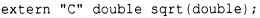

⇐16.3.2.2 void* 16.4 Список литературы⇒
С и С++ могут быть реализованы с использованием различных соглашений о связывании. Основной причиной этого является больший акцент на проверку типов в С++. Практическая же причина в том, что С++ поддерживает перегрузку, поэтому могут быть две глобальные функции с одним именем open ( ) . Это должно быть отражено в способе работы компоновщика.
Чтобы обеспечить функции на С++ связывание в стиле С (чтобы ее можно было вызывать из фрагмента программы на С) или разрешить вызов функции С из фрагмента программы на С++, объявите ее как extern "С". Например:
Теперь sqrt (double) может быть вызвана из фрагмента кода на С или С++. Определение sqrt (double) также может быть скомпилировано как функция С или как функция С++.
Только одна функция с заданным именем в области видимости может иметь связывание С (поскольку С не допускает перегрузку функций). Спецификация связывания не влияет на проверку типов, поэтому правила С++ для вызовов функций и проверки аргументов применяются к функции, объявленной как extern "С", по-прежнему.